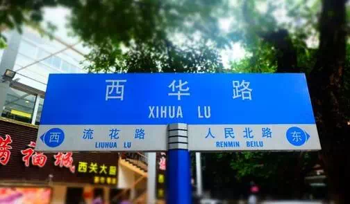

俗话说，“食在广州”。来广州干什么？当然是吃啊！虾饺、肠粉、艇仔粥、叉烧包、煎饺、煲仔饭、烧鹅…生活在广州的同胞真是太幸福了！那去哪里吃呢？最地道、老广最爱去的美食街都在哪里？答案就在下面这篇攻略里喽！
西华路对于很多老广而言，是童年的回忆，也是生活的片段，在这里，你能看到各种林立的小店，美味的老字号，看到匆匆忙忙路过的本地人，感受到浓浓的老广情，体验到真正广州的市井生活。最重要的是，你可以从街头吃到街尾不重样哦！
交通：
①地铁1号线陈家祠站，步行11分钟即可到达西华路康王北路口；
②地铁1号线西门口站，步行8分钟即可到达西华路人民北路口；
③公交，乘坐134路，4路，夜16路到西华路站下车即可